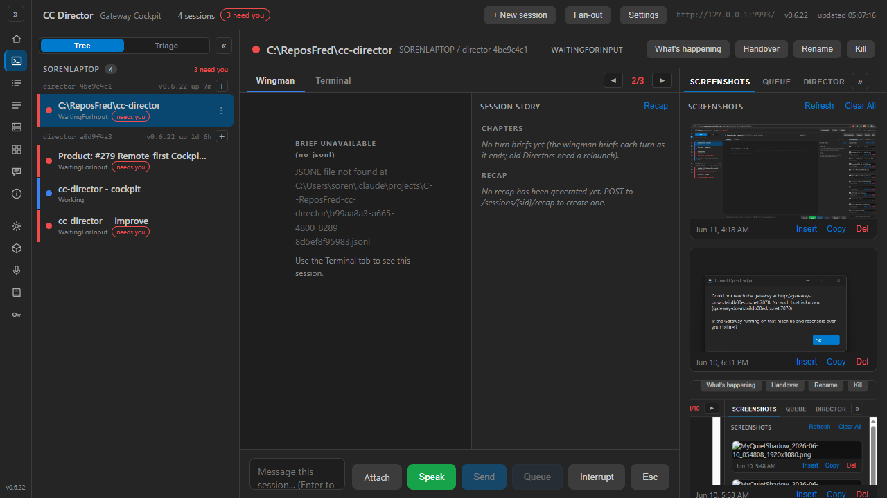

PR: #319 | Branch: issue-317-gateway-screenshot-proxy (HEAD a29647d) | Date: 2026-06-11 | Role: QA Agent (CenCon) - fresh context, no developer artifacts reused
1. Checked out the PR branch; dotnet build cc-director.sln: Build succeeded, 0 Warning(s) 0 Error(s). 2. Built slot-5 test Director (scripts\local-build-avalonia.ps1 -Slot 5) and launched it via the cc-director-launch scheduled task -> Control API http://127.0.0.1:7887; created a real session sid=2461cac4-d6ef-4d05-9807-e9872c0492a2 (POST /sessions, 201). Director listed 214 screenshots in C:\Users\soren\Pictures\Screenshots. 3. Dev Gateway from the branch on port 7993 (CC_GATEWAY_NO_TAILSCALE=1, CC_TURNBRIEFS=0, CC_COCKPIT_PORT=7472) + dev Cockpit on 7472 (Cockpit__GatewayUrl=http://127.0.0.1:7993/). Gateway discovered the slot-5 Director via FSW. Browser (headless Chromium, Playwright) only ever talked to http://127.0.0.1:7993/ - the one-URL topology.
| Criterion | Expected | Actual (QA-measured) | |
|---|---|---|---|
| 1. ShotUrl same-origin to the Gateway, never a Director address; unit-tested builder | {gateway-origin}/sessions/{sid}/screenshots/file?name=..., escaped name, scheme/port/trailing-slash safety |
Live DOM eval: all 12 rendered img.shot-thumb srcs =
http://127.0.0.1:7993/sessions/2461cac4-.../screenshots/file?name=Screenshot%20...png;
sweep found 0 img referencing the Director ports 7887/7880.
CockpitShotUrlsTests (11 tests, run by QA, green) pin origin, sid path, escaping
(%20 %2B %26), https→https, http→http, port kept, trailing-slash and deep-link path dropped,
invalid inputs throw. |
PASS |
| 2. Gateway route returns the bytes with correct content type; round-trip equals source | 200, image content type, byte-identical | Live: GET /sessions/2461cac4-.../screenshots/file?name=Screenshot%202026-06-11%20041835.png
on the dev Gateway (7993) returned 200 image/png, 182,527 bytes;
SequenceEqual against the Director-direct fetch (7887): BYTES IDENTICAL: True.
Unit: ScreenshotProxyRoundTripTests (self-hosted GatewayHost + stub Director Kestrel) - 200 +
image/png + byte equality + escaped name arriving decoded + Director 404 pass-through; green in QA's run. |
PASS |
| 3. Unknown sid → 404; cached-owner-offline → 503 (same #268/#288/#291 resolution, not forked) | 404 / 503 with the WS-leg semantics | Live: unknown sid → 404 {"error":"session not found across any director"}.
Live: after a successful fetch cached the owner, QA stopped the slot-5 Director and re-fetched →
503 {"error":"owning director offline"}.
Code review: the screenshots leg is mapped through the SAME ProxyAsync/SessionOwnerCache
used by stream/dictate (no fork). Unit: the leg is an added InlineData in the existing
SessionWsProxyEndpointsTests 404/503/route-precedence theories; green. |
PASS |
| 4. Thumbnails render live; View opens full-size at the same-origin URL | Actual images, not broken icons | Screenshot 1 below: the SCREENSHOTS panel shows real decoded images. DOM check: 12/12 thumbs
complete && naturalWidth > 0 (first: 1898x962). Clicking a thumbnail opened a new tab at
http://127.0.0.1:7993/sessions/2461cac4-.../screenshots/file?name=... titled
file (1898x962), image rendered (Screenshot 2). |
PASS |
| 5. Copy still works (same-origin fetch, no JS protocol change) | Image lands on the clipboard | With clipboard permission granted, clicking Copy on the first card showed
"copied image to clipboard" in the gallery status line. Diff review: cockpit-shots.js
change is comment-only - fetch/clipboard logic untouched. |
PASS |
| 6. Build clean; existing Gateway + Cockpit tests green | 0/0; suites pass | QA's own runs: dotnet build cc-director.sln → 0 Warning(s), 0 Error(s).
CcDirector.Gateway.Tests: 435 passed, 0 failed.
CcDirector.Cockpit.Tests: 16 passed, 0 failed. |
PASS |
05:01:45.269 [SessionWsProxy] open leg=shot sid=2461cac4-... query=?name=Screenshot%202026-06-11%20041835.png client=127.0.0.1 05:01:45.276 [SessionWsProxy] leg=shot sid=2461cac4-... resolved director=4be9c4c1-... -> http://127.0.0.1:7887/screenshots/file 05:01:45.342 [SessionWsProxy] close leg=shot sid=2461cac4-... director=4be9c4c1-... 05:01:54.984 [SessionWsProxy] leg=shot sid=00000000-... -> 404 (no owning director across the fleet, none cached)


/screenshots endpoints untouched (diff contains no ControlApi changes) - scope OUT respected.docs/cencon/architecture_manifest.yaml updated in the PR (SessionWsProxyEndpoints third leg + CockpitShotUrls). No DT security rule touched; the new route sits behind the same Gateway auth middleware as the existing legs.DirectorClient.ScreenshotUrl removed, so the broken pattern cannot silently return.